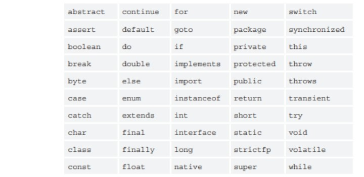
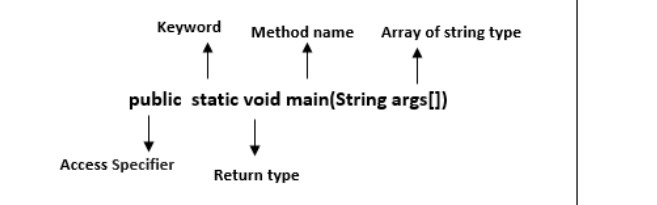
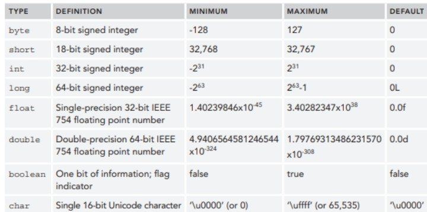
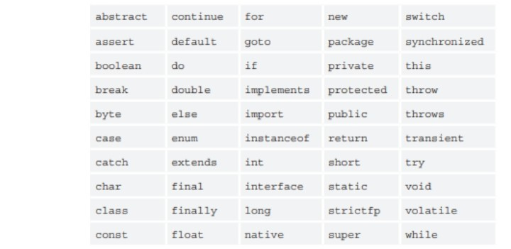
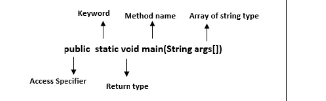
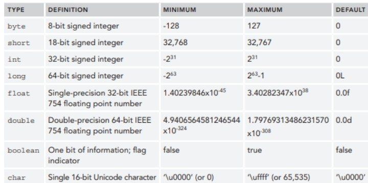

Online Learning Modules
Module 1
Basics of JAVA Program
A First Java Application Program
Consider the following Java (application) program:
//*************************************************************
// This is a simple Java program. It displays three lines
// of text, including the sum of two numbers.
//*************************************************************
public class ASimpleJavaProgram
{
public static void main (String[] args)
{
System.out.println(“My first Java program.”);
System.out.println(“The sum of 2 and 3 = “ +5);
System.out.println(“7 + 8=” +(7+8));
}
}
The text “First Java Program” is a literal string of characters—a series of characters that will
appear in output exactly as entered.
BASICS OF JAVA PROGRAM
COMMENT
Comments can be used to identify the authors of the program, give the date when the program is
written or modified, give a brief explanation of the program, and explain the meaning of key
statements in a program.
ASimpleJavaProgram, given in the previous section, contains the following comments
//*************************************************************
// This is a simple Java program. It displays three lines
// of text, including the sum of two numbers.
//*************************************************************
A Java program has two common types of comments—single-line comments and multiple-line comments.
Single-line comments begin with // and can be placed anywhere in the line. Everything encountered
in that line after // is ignored by the compiler.
Multiple-line comments are enclosed between /* and */. The compiler ignores anything that appears
between /* and */.
SPECIAL SYMBOL
- * /
. ; ? ,
<= != == >=
The first row includes mathematical symbols for addition, subtraction, multiplication,
and division. The second row consists of punctuation marks taken from English grammar.
Note that the comma is a special symbol. . The third row contains symbols used for comparisons.
IDENTIFIERS
Identifiers are names of things, such as variables, constants, and methods that appear in programs
. Some identifiers are predefined; others are defined by the user. All identifiers must obey Java’s
rules for identifiers.
Identifier: A Java identifier consists of letters, digits, the underscore character (_), and the dollar
sign ($) and must begin with a letter, underscore, or the dollar sign.
The following are legal identifiers in Java:
first
conversion
payRate
counter1
$Amount
Examples of Illegal Identifiers
 RESERVED WORDS
Reserved words are also called keywords. The letters in a reserved word are always lowercase.
Like the special symbols, each reserved word is considered a single symbol. Furthermore, reserved
words cannot be redefined within any program; that is, they cannot be used for anything other than
their intended use.
JAVA KEYWORDS

METHOD
The main() is the starting point for JVM to start execution of a Java program. Without the main()
method, JVM will not execute the program. The syntax of the main() method is:

public: It is an access specifier. We should use a public keyword before the main() method so that
JVM can identify the execution point of the program. If we use private, protected, and default
before the main() method, it will not be visible to JVM.
static: You can make a method static by using the keyword static. We should call the main() method
without creating an object. Static methods are the method which invokes without creating the objects
, so we do not need any object to call the main() method.
void: In Java, every method has the return type. Void keyword acknowledges the compiler that main()
method does not return any value.
main(): It is a default signature which is predefined in the JVM. It is called by JVM to execute
a program line by line and end the execution after completion of this method. We can also overload
the main() method.
String args[]: The main() method also accepts some data from the user. It accepts a group of strings
, which is called a string array. It is used to hold the command line arguments in the form of
string values.
DATA TYPES
Data type: A set of values together with a set of operations on those values
PRIMITIVE DATA TYPE
The primitive data types are the fundamental data types in Java.
There are three categories of primitive data types:
• Integral, which is a data type that deals with integers, or numbers without a decimal part
(and characters)
• Floating-point, which is a data type that deals with decimal numbers
• Boolean, which is a data type that deals with logical values Integral data types are further
classified into five categories: char, byte, short, int, and long.

DECLARING AND USING CONSTANTS AND VARIABLES
A data item is constant when its value cannot be changed while a program is running.
A variable is a named memory location that can store a value. A variable can hold only one value
at a time, but the value it holds can change.
Declaring Variables
A variable declaration is a statement that reserves a named memory location and includes the
following:
✓ A data type that identifies the type of data that the variable will store
✓ An identifier that is the variable’s name
✓ An optional assignment operator and assigned value, if you want a variable to contain an initial
value
✓ An ending semicolon
The basic form of Variable declaration
data_type variable_name = value;
Example:
The data_type is one of Java’s data types and variable_name is the name of the variable. To declare
more than one (1) variable of the specified type, use a comma-separated list.
The following are some valid examples of variable declaration and initialization in Java:
int a,b,c; float f = 2.30f; byte a;
int a = 10, b = 4 +5; double grade = 1.50; int size; size =50;
int x = b + 10; char letter = “E”
Declaring Named Constants
A variable is a named memory location for which the contents can change. If a named location’s
value should not change during the execution of a program, you can create it to be a named constant
. A named constant is also known as a symbolic constant. A named constant is similar to a variable
in that it has a data type, a name, and a value. A named constant differs from a variable in several
ways:
✓ In its declaration statement, the data type of a named constant is preceded by the keyword final.
✓ A named constant can be assigned a value only once, and then it cannot be changed later in the
program. Usually you initialize a named constant when you declare it; if you do not initialize the
constant at declaration, it is known as a blank final, and you can assign a value later. Either way
, you must assign a value to a constant before it is used.
✓ Although it is not a requirement, named constants conventionally are given identifiers using all
uppercase letters, using underscores as needed to separate words
The syntax to declared named constant:
final data_type variable_name = value;
For example, each of the following defines a conventionally named constant:
final int NUMBER_OF_DEPTS = 20;
final double PI = 3.14159;
final double TAX_RATE = 0.015;
final string COMPANY = "ABC Manufacturing";
RESERVED WORDS
Reserved words are also called keywords. The letters in a reserved word are always lowercase.
Like the special symbols, each reserved word is considered a single symbol. Furthermore, reserved
words cannot be redefined within any program; that is, they cannot be used for anything other than
their intended use.
JAVA KEYWORDS

METHOD
The main() is the starting point for JVM to start execution of a Java program. Without the main()
method, JVM will not execute the program. The syntax of the main() method is:

public: It is an access specifier. We should use a public keyword before the main() method so that
JVM can identify the execution point of the program. If we use private, protected, and default
before the main() method, it will not be visible to JVM.
static: You can make a method static by using the keyword static. We should call the main() method
without creating an object. Static methods are the method which invokes without creating the objects
, so we do not need any object to call the main() method.
void: In Java, every method has the return type. Void keyword acknowledges the compiler that main()
method does not return any value.
main(): It is a default signature which is predefined in the JVM. It is called by JVM to execute
a program line by line and end the execution after completion of this method. We can also overload
the main() method.
String args[]: The main() method also accepts some data from the user. It accepts a group of strings
, which is called a string array. It is used to hold the command line arguments in the form of
string values.
DATA TYPES
Data type: A set of values together with a set of operations on those values
PRIMITIVE DATA TYPE
The primitive data types are the fundamental data types in Java.
There are three categories of primitive data types:
• Integral, which is a data type that deals with integers, or numbers without a decimal part
(and characters)
• Floating-point, which is a data type that deals with decimal numbers
• Boolean, which is a data type that deals with logical values Integral data types are further
classified into five categories: char, byte, short, int, and long.

DECLARING AND USING CONSTANTS AND VARIABLES
A data item is constant when its value cannot be changed while a program is running.
A variable is a named memory location that can store a value. A variable can hold only one value
at a time, but the value it holds can change.
Declaring Variables
A variable declaration is a statement that reserves a named memory location and includes the
following:
✓ A data type that identifies the type of data that the variable will store
✓ An identifier that is the variable’s name
✓ An optional assignment operator and assigned value, if you want a variable to contain an initial
value
✓ An ending semicolon
The basic form of Variable declaration
data_type variable_name = value;
Example:
The data_type is one of Java’s data types and variable_name is the name of the variable. To declare
more than one (1) variable of the specified type, use a comma-separated list.
The following are some valid examples of variable declaration and initialization in Java:
int a,b,c; float f = 2.30f; byte a;
int a = 10, b = 4 +5; double grade = 1.50; int size; size =50;
int x = b + 10; char letter = “E”
Declaring Named Constants
A variable is a named memory location for which the contents can change. If a named location’s
value should not change during the execution of a program, you can create it to be a named constant
. A named constant is also known as a symbolic constant. A named constant is similar to a variable
in that it has a data type, a name, and a value. A named constant differs from a variable in several
ways:
✓ In its declaration statement, the data type of a named constant is preceded by the keyword final.
✓ A named constant can be assigned a value only once, and then it cannot be changed later in the
program. Usually you initialize a named constant when you declare it; if you do not initialize the
constant at declaration, it is known as a blank final, and you can assign a value later. Either way
, you must assign a value to a constant before it is used.
✓ Although it is not a requirement, named constants conventionally are given identifiers using all
uppercase letters, using underscores as needed to separate words
The syntax to declared named constant:
final data_type variable_name = value;
For example, each of the following defines a conventionally named constant:
final int NUMBER_OF_DEPTS = 20;
final double PI = 3.14159;
final double TAX_RATE = 0.015;
final string COMPANY = "ABC Manufacturing";